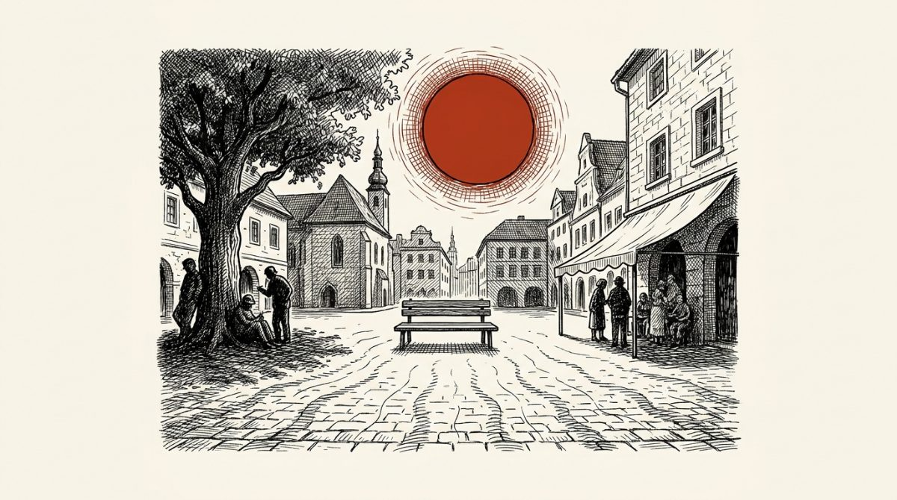
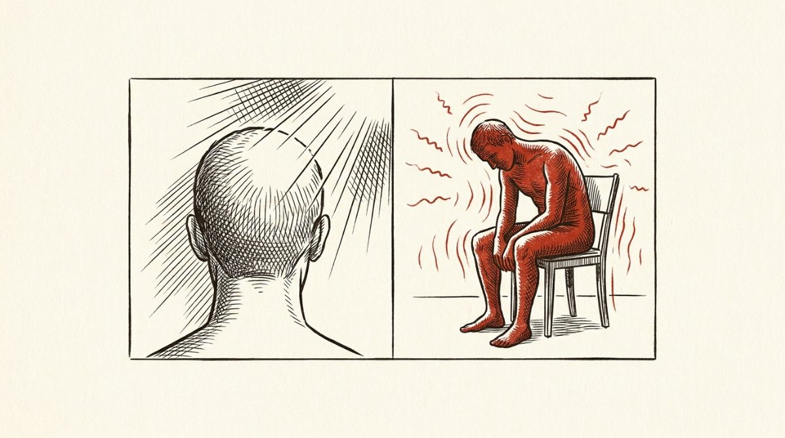
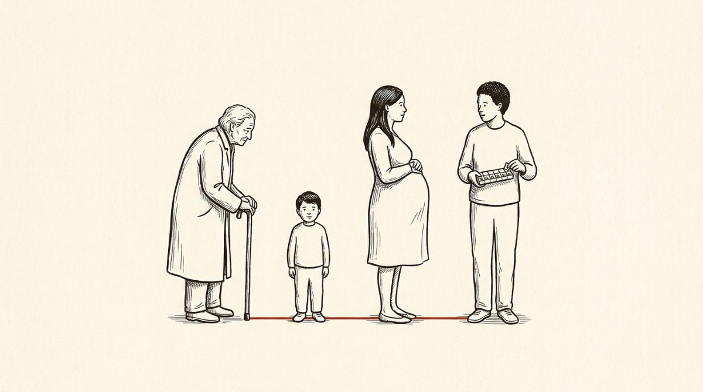
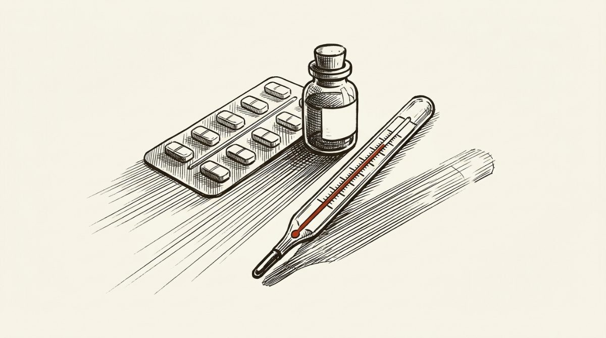
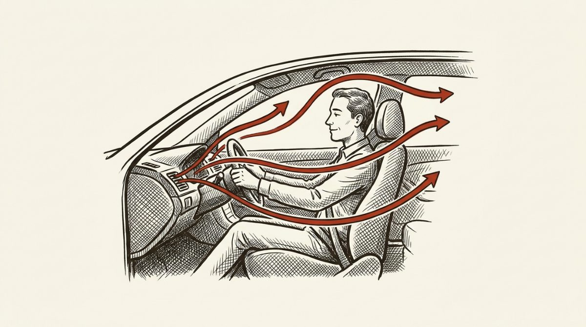
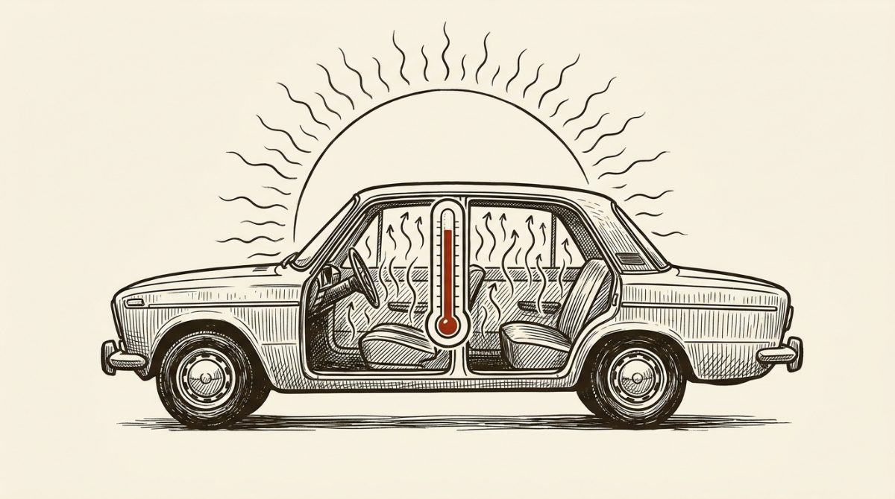
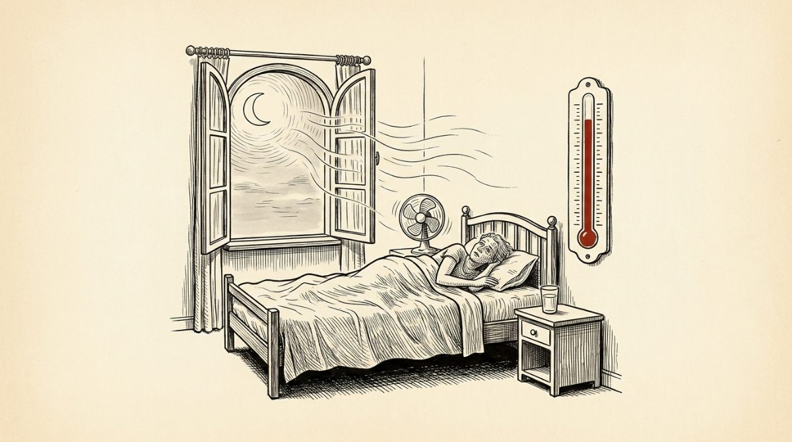
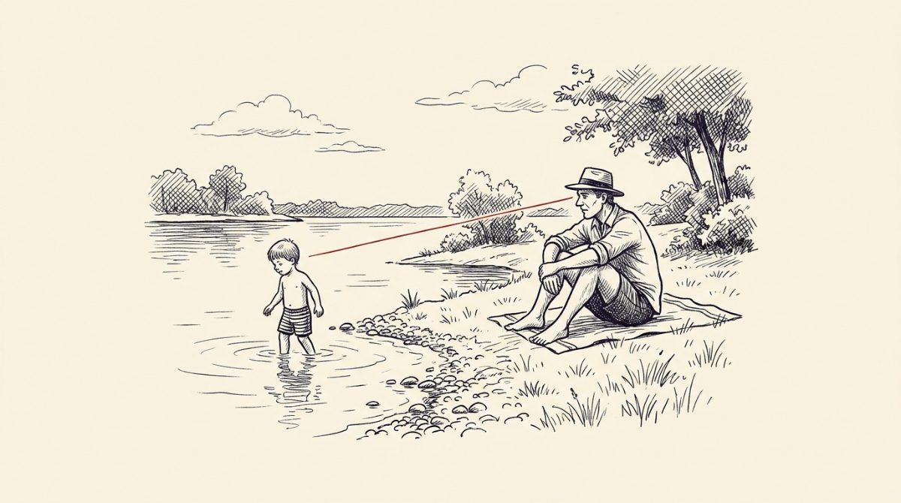

Horko zabíjí tiše. Většině úmrtí jde přitom předejít.
Vysoké teploty nezabíjejí jako povodeň — nikdo neumře „na vedro“ v přímém přenosu. Zátěž se sčítá:
dehydratace, zahuštěná krev, přetížené srdce, špatně spaná tropická noc. Umírají lidé, kteří by jinak
žili dál. Tahle stránka shrnuje na jednom místě, co s tím dokážete udělat vy.

Základ
Sedm věcí, na které v horkých dnech nezapomínat
Doporučení Ministerstva zdravotnictví z 3. srpna 2026. Nejsou nová ani objevná — jejich hodnota je v tom,
že se jimi skoro nikdo neřídí důsledně.
1
Pít průběžně, ne až při žízni
Žízeň je opožděný signál — když ji cítíte, tělo už vodu postrádá. U seniorů se pocit žízně navíc s věkem otupuje, takže se na něj nelze spolehnout vůbec.
2
Mezi 11. a 16. hodinou zůstat mimo přímé slunce
To je okno, kdy je sluneční záření nejintenzivnější. Nejde jen o teplotu — jde i o UV dávku, kterou pokožka dostane.
3
Lehké prodyšné oblečení a pokrývka hlavy
Volné a světlé. Pokrývka hlavy není kosmetika — chrání hlavu a šíji, tedy přesně místa, kde vzniká úžeh.
4
Opalovací krém s dostatečným faktorem
Nanášet dřív, než vyjdete ven, a opakovaně během dne — po koupání a po zpocení znovu.
5
Fyzickou námahu přesunout mimo poledne
Běh, zahrada, stěhování, sport — brzy ráno nebo večer. Svalová práce sama o sobě vyrábí teplo, které tělo musí odvést navíc.
6
Kontrolovat seniory a lidi žijící o samotě
Jeden telefonát denně. Ptejte se konkrétně: máš co pít, není ti horko, jak jsi spal. Osamělost je u veder samostatný rizikový faktor — není, kdo by si všiml.
7
Nikdy nenechávat děti ani zvířata v zaparkovaném autě
Ani na několik minut. Proč je tohle jiná kategorie než zbytek seznamu, ukazují čísla níže.
Poznat problém
Úžeh, nebo úpal? Rozdíl rozhoduje o tom, jestli voláte záchranku
Používají se skoro zaměnitelně, ale jde o dva různé stavy s různou naléhavostí. Úpal může skončit smrtí
během hodin.

Úžeh vzniká od slunce na hlavě. Úpal je přehřátí celého těla — i bez jediného paprsku.
Rozdíl mezi úžehem a úpalem
Úžeh
Úpal
Čím vzniká
Přímým slunečním zářením na hlavu a šíji
Celkovým přehřátím organismu — i bez slunce, třeba v bytě nebo v autě
Typické příznaky
Bolest hlavy, zarudlá kůže, nevolnost, ztuhlá šíje
Teplota nad 40 °C, zmatenost, horká suchá kůže, zástava pocení, zvracení, křeče
Co udělat
Stín, chlazení hlavy, tekutiny, klid
Volat 155, přesunout do stínu, svléknout, aktivně chladit
Naléhavost
Obvykle zvládnutelné doma
Ohrožení života
Nebezpečný obrat: když se člověk přestane potit
Pocení je hlavní chladicí mechanismus těla. Když se přehřátý člověk najednou přestane potit a kůže
je horká a suchá, znamená to, že termoregulace selhala — ne že se mu ulevilo. To je okamžik pro 155.
Kdo je ohrožen
Pro koho je horko víc než nepohodlí

Senioři
Slabší pocit žízně, nižší schopnost termoregulace, častá chronická onemocnění a léky, které hospodaření s vodou ovlivňují. Zdaleka nejohroženější skupina.
Malé děti a novorozenci
Mají větší povrch těla vůči hmotnosti, přehřejí se rychleji a nedokážou o problému říct. Kojenec se dehydratuje během hodin, ne dní.
Těhotné ženy
Organismus se v těhotenství přehřívá rychleji a hrozí vyšší riziko dehydratace. Stejná doporučení platí i po porodu.
Chronicky nemocní
Srdeční a cévní onemocnění, cukrovka, onemocnění ledvin, obezita. Horko je zátěž navíc pro systém, který už pracuje na hranici.
Lidé užívající některé léky
Diuretika, některá psychofarmaka a léky na tlak mohou měnit hospodaření s tekutinami nebo schopnost pocení. Léky sami nevysazujte — zeptejte se lékaře nebo lékárníka.
Lidé žijící o samotě
Samotný fakt, že si nikdo nevšimne, je rizikový faktor. Zhoršení stavu při přehřátí přichází plíživě a postižený ho často sám nerozpozná.
Konkrétní situace
Co se v horku snadno přehlédne
Léky ztrácejí účinnost, aniž by to bylo vidět
Tohle je nejpodceňovanější položka celého seznamu. Lék, který se přehřál, vypadá stejně jako předtím —
žádná změna barvy, žádný zápach. Přesto nemusí fungovat.

Většinu léků uchovávejte do 25 °C, nebo podle pokynů v příbalové informaci.
Nenechávejte léky na přímém slunci ani v zaparkovaném autě, kde teplota přesáhne 50 °C.
Inzulin a biologická léčiva patří do chladničky — řiďte se pokyny výrobce.
Při přepravě použijte chladicí pouzdro, nebo lék co nejdřív uložte do doporučených podmínek.
Zdroj: Ministerstvo zdravotnictví ČR
Klimatizace v autě: rozdíl teplot je důležitější než samotný chlad
Příliš velký rozdíl mezi venkovní a vnitřní teplotou může způsobit takzvaný teplotní šok — bolesti hlavy,
závrať, nevolnost, ztuhlost svalů nebo podráždění dýchacích cest. Opatrní by měli být hlavně senioři
a lidé se srdečními či cévními chorobami.

Rozpálené auto nejdřív vyvětrejte, teprve pak zapněte klimatizaci.
Ideální teplota v kabině je 23–25 °C, tedy asi o 5–6 °C méně, než je venku.
Proud studeného vzduchu nesměřujte přímo na obličej ani na tělo.
Nezapomínejte na pravidelnou výměnu nebo čištění kabinového filtru.
Zdroj: Ministerstvo zdravotnictví ČR
Zaparkované auto: proč „jen na chvilku“ neexistuje
Tady čísla mluví jasněji než jakékoli varování. Auto se nechová jako stín — chová se jako skleník.

Jak rychle se ohřeje zaparkované auto
Situace
Hodnota
Nárůst teploty během prvních 30 minut
~80 % celkového nárůstu
Venku 35 °C, uvnitř auta po 20 minutách
přes 50 °C
Palubní deska oproti vzduchu v kabině
o 20–30 °C teplejší
Barva auta ani pootevřené okénko teplotu uvnitř výrazně nesníží. Nikdy v zaparkovaném
autě nenechávejte děti, seniory ani zvířata — ani na několik minut.
Zdroj: Ministerstvo zdravotnictví ČR
Tropické noci: chybí zotavení, ne jen pohodlí
Za tropickou noc se považuje noc, kdy teplota neklesne pod 20 °C. Význam nespočívá v tom, že se
špatně spí — spočívá v tom, že tělo nemá kdy vychladnout. Zátěž z jednoho horkého dne se přenese do
dalšího a kumuluje se. Právě proto bývají nejnebezpečnější dlouhé vlny veder, ne jediný rekordní den.

Větrejte v noci a nad ránem, přes den nechte zataženo a okna zavřená.
Ložnice na sever nebo místnost, která se přes den nerozpaluje, je lepší volba než zvyk.
Vlažná (ne studená) sprcha před spaním pomáhá tělu odvést teplo.
U seniorů se přehřátí v noci projeví hlavně zmateností — ta je varovný příznak, ne „stáří“.
Připravilo Zdravé Česko podle doporučení ČHMÚ a SZÚ; téma odpovídá materiálu MZ ČR „Tropické noci“.
U vody: nejčastější příčinou není neplavectví, ale nepozornost

Děti u vody ani na okamžik bez dozoru. Utonutí je tiché a rychlé — nevypadá jako v filmech.
Do vody nevstupujte prudce, když jste rozpálení — hrozí kolaps z náhlého ochlazení.
Neskákejte do vody, jejíž hloubku a dno neznáte.
Alkohol a koupání nejdou dohromady; zhoršuje odhad i termoregulaci.
Nafukovací lehátko není záchranná pomůcka — vítr ho odnese rychleji, než stihnete doplavat zpět.
Připravilo Zdravé Česko; téma odpovídá materiálům MZ ČR ve spolupráci se ZZS hl. m. Prahy.
Mýty a fakta
Čtyři představy, které v horku zvyšují riziko
Ministerstvo zdravotnictví k vedrům vydalo přehled nejčastějších mýtů. Tohle jsou ty, na které upozorňuje.
„Mně se to stát nemůže.“
Přehřátí nerozlišuje podle kondice. Rozhoduje kombinace teploty, vlhkosti, námahy a doby expozice — a ta dokáže složit i zdravého člověka.
„Když nemám žízeň, nemusím pít.“
Žízeň se dostavuje se zpožděním za skutečnou ztrátou tekutin. U seniorů je tento signál výrazně oslabený.
„Doma jsem v bezpečí.“
Byt pod střechou nebo místnost bez možnosti vyvětrat drží teplo i v noci. Úpal vzniká i bez jediného slunečního paprsku.
„V noci je chladno, to se srovná.“
Při tropických nocích teplota neklesne pod 20 °C a tělo nedostane prostor se zotavit. Zátěž se přenáší do dalšího dne.
Systémová vrstva
Co dělají nemocnice — a co to znamená pro vás
Fakultní nemocnice napříč republikou jsou podle Ministerstva zdravotnictví na období vysokých teplot
připraveny. V zařízeních se klade důraz na pitný režim pacientů i personálu, cirkulaci vzduchu a stínění,
klimatizaci nebo ventilátory, zvýšený dohled nad rizikovými pacienty a průběžnou edukaci.
Ve většině nemocnic není kvůli očekávaným vedrům nutné přijímat mimořádná provozní opatření ani
omezovat plánovanou péči. Pro pacienta to prakticky znamená, že objednané zákroky a vyšetření
běží dál — vedro samo o sobě není důvod, proč by se termín rušil.
Stejnou logiku uplatňují i sociální služby: během tropických dnů upravují režim péče tak, aby předcházely
dehydrataci a přehřátí u lidí s omezenou pohyblivostí.
Co zatím chybí
Česko nemá hotový celostátní plán zvládání zdravotních dopadů extrémních veder. Podle Matyáše Fošuma,
ředitele odboru ochrany veřejného zdraví Ministerstva zdravotnictví, se plán připravuje v rámci
Národního akčního plánu adaptace na změnu klimatu a měl by být schválen pro příští letní sezonu.
Do té doby se postupuje podle dílčích doporučení — tedy podle toho, co je shrnuté na této stránce.
Původní materiály
Kde najdete originály
Všechno podstatné z kampaně ministerstva je přepsané výš v textu. Když si chcete ověřit znění nebo
vidět původní grafiku, tady jsou zdroje:
Ředitel odboru ochrany veřejného zdraví o připravovaném plánu zvládání extrémních veder.
Zdroje a poznámka k autorství
Odkud to je
Tohle není stránka Ministerstva zdravotnictví. Připravilo ji Zdravé Česko
(skorezdravotnictvi.cz) jako čtenářsky použitelné shrnutí veřejně zveřejněných doporučení. Ministerstvo
za obsah této stránky neodpovídá.
Příspěvky Ministerstva zdravotnictví ČR na Facebooku a Instagramu — zdroj konkrétních údajů o lécích, klimatizaci, zaparkovaném autě, těhotenství, úpalu a úžehu a péči o pacienty.
Blesk.cz, pořad Epicentrum — rozhovor s Matyášem Fošumem o připravovaném plánu zvládání extrémních veder.
Části označené „Připravilo Zdravé Česko“ vycházejí z obecných doporučení k ochraně zdraví za vysokých
teplot (SZÚ, ČHMÚ, WHO). Uvádíme je odděleně proto, že podklad ministerstva byl v těchto případech
publikovaný jako obrázek, jehož text nelze doslovně citovat.
Ilustrace na této stránce jsou generované (Gemini) podle zadání v
scripts/generate-vedra-illustrations.mjs. Nejde o fotografie ani o materiály
ministerstva — mají text členit, ne cokoli dokládat.
Stránka nenahrazuje lékařskou péči. Při potížích kontaktujte svého lékaře, na
155 volejte při stavech ohrožujících život.